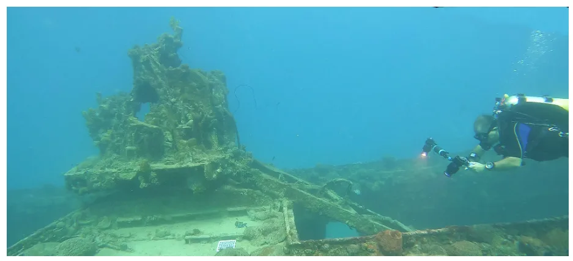
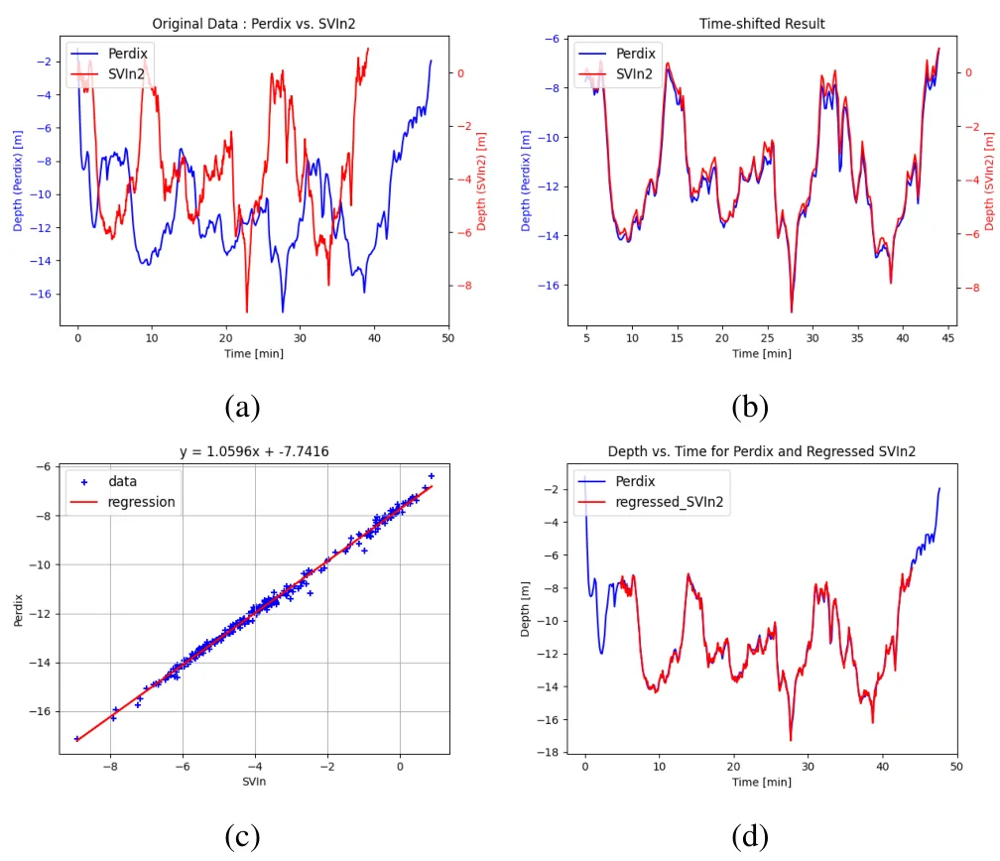
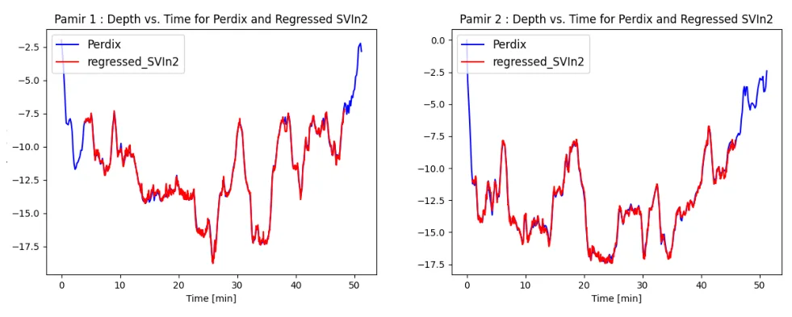
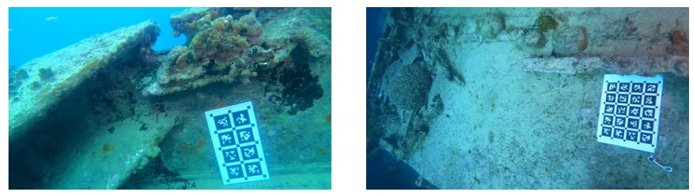
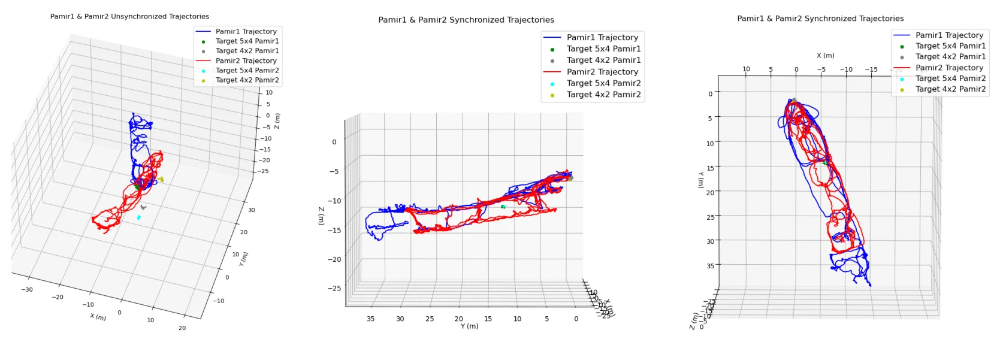
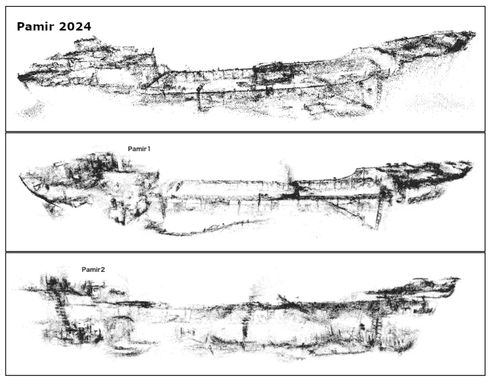

Mapping Pamir：水下沉船的多会话视觉—惯性 SLAM 与三维重建Mapping Pamir: Multi-Session Visual-Inertial SLAM and 3D Reconstruction of an Underwater Shipwreck
完整命中多会话 VI-SLAM、SfM 和真实水下三维重建，系统链路清晰且有 ICRA 实测；需核查无标定靶时的会话闭环、折射建模和定量几何精度。
一句话工作总结
以 SVIn2、潜水深度记录、COLMAP 和固定标定靶构建低成本水下多会话轨迹与稠密三维模型。
摘要
本文提出使用低成本运动相机绘制水下环境的多会话建图框架，并以潜水电脑记录的水深增强视觉—惯性数据。系统先由开源 VI-SLAM 框架 SVIn2 为每次采集生成轨迹和稀疏重建，再将关键帧及估计相机位姿交给 COLMAP 做全局优化与稠密重建。若场景中存在固定标定靶，则据此估计不同采集会话之间的坐标变换，将各会话统一到同一坐标系。作者在巴巴多斯近海沉船上验证流程，分两次采集覆盖沉船外部与可进入的内部，第三次采集还使用了不同视场角的双相机。
This paper presents a framework for multi-session mapping of underwater environments utilizing an affordable action camera. The Visual-Inertial data are augmented by water depth recordings from a dive computer. SVIn2, an open-source VI-SLAM framework, is utilized to generate a trajectory and a sparse reconstruction for each session. Utilizing the keyframes extracted from SVIn2 and the estimated camera poses, a Structure-from-Motion (SfM) framework, COLMAP, is employed for global optimization and to produce a dense reconstruction of the target environment. The presence of calibration targets at fixed locations, when available, is used to estimate the coordinate transformation between different data collection sessions, thus transforming the different sessions into the same coordinate frame. The proposed pipeline is employed for the mapping of a shipwreck off the coast of Barbados. For the first time, both the exterior and the accessible interior parts of the wreck were mapped in two sessions, while a third session employed two cameras with different fields of view.
中文解读摘录
图表/页面预览
{kind=link}

{kind=link}

{kind=link}

{kind=link}

{kind=link}

{kind=link}
